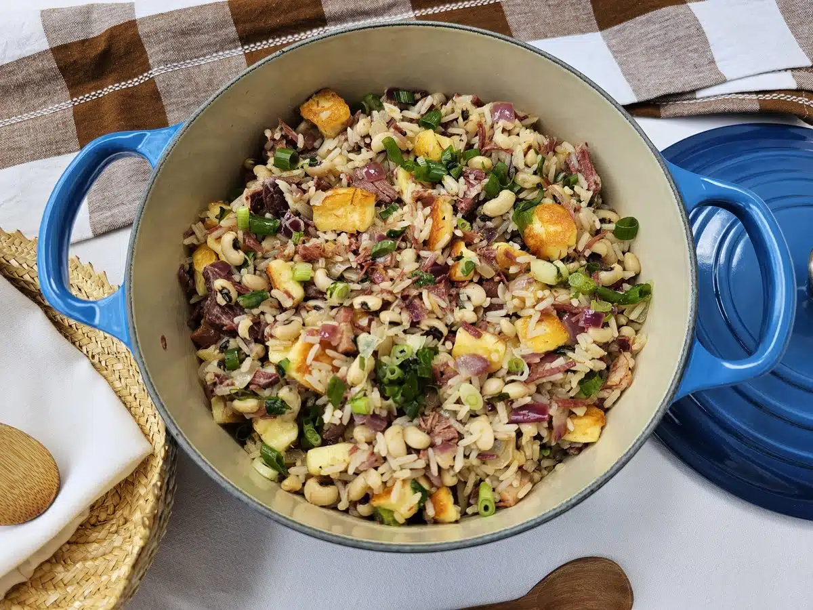
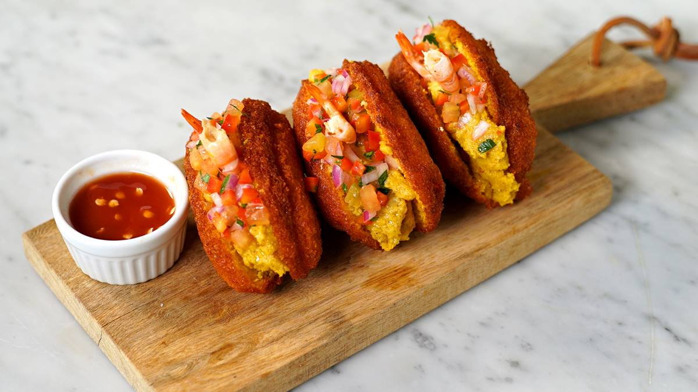

Baião de Dois
Arroz, feijão verde, queijo coalho e carne de sol acebolada.
Comida regional feita com afeto
Sabores que aquecem sua história. Do cuscuz ao baião, da carne de sol aos doces de tacho.

A Raízes do Nordeste nasceu do desejo de levar os sabores tradicionais da culinária nordestina para o dia a dia das pessoas. Inspirada nas receitas de família, nossa cozinha valoriza ingredientes regionais, preparo artesanal e o acolhimento típico do Nordeste brasileiro.
E o que começou como uma pequena lanchonete familiar cresceu sem perder sua essência: servir comida simples, saborosa e feita com carinho.
Hoje, conectamos tradição e tecnologia para oferecer uma experiência prática, rápida e acolhedora.